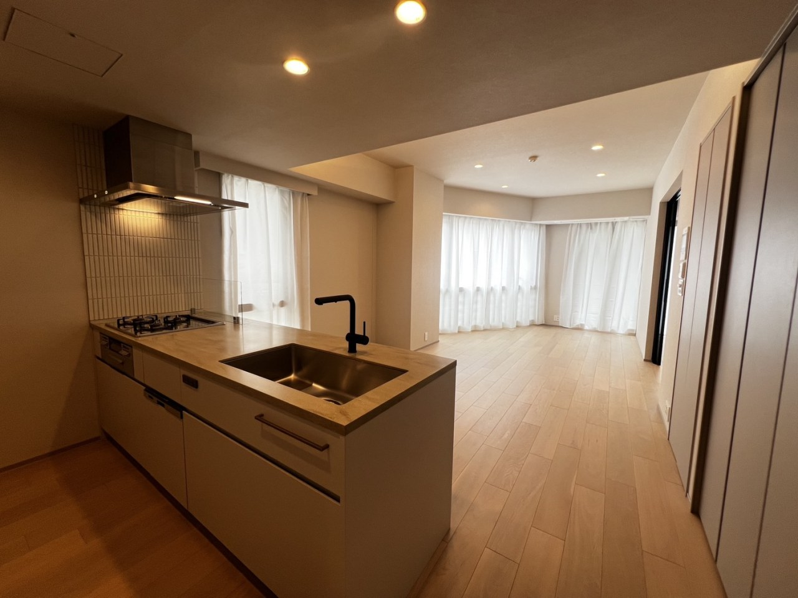
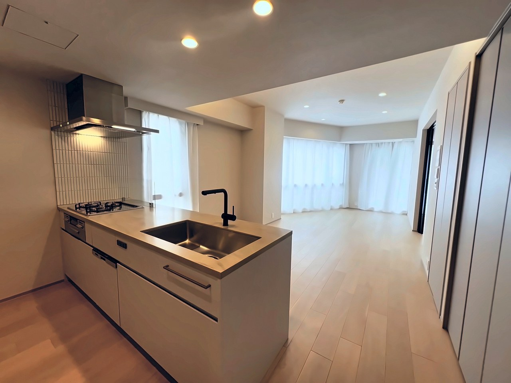
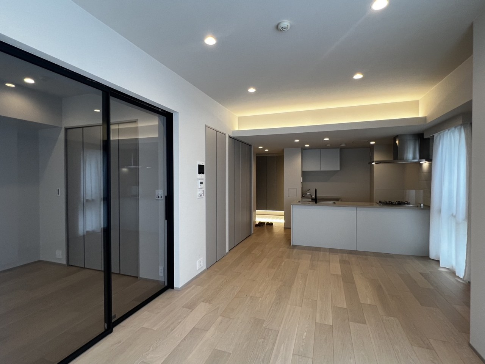
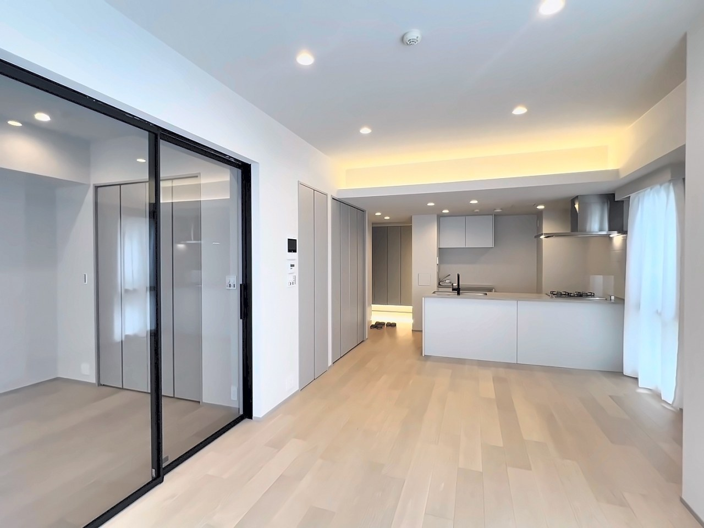
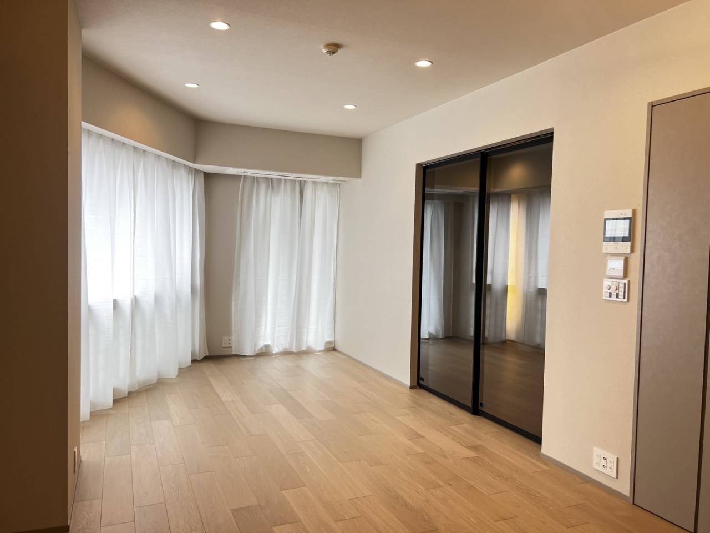
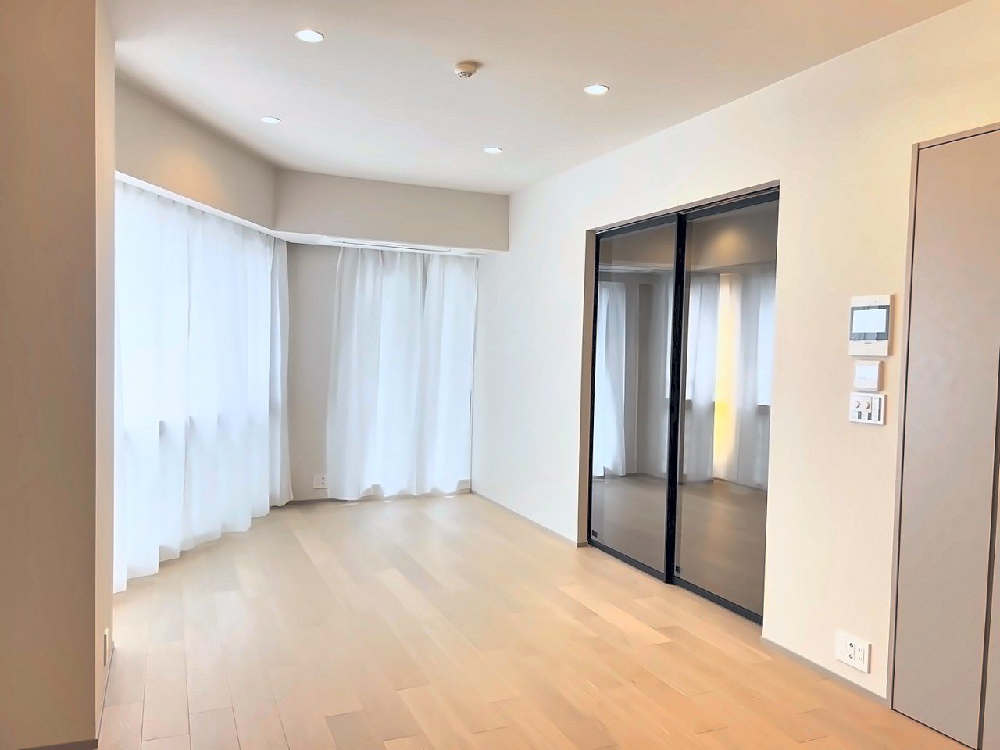
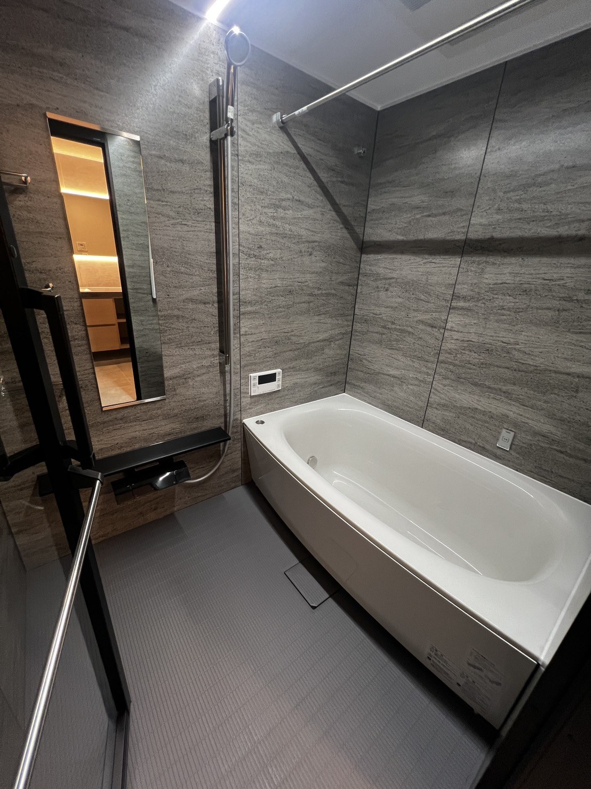
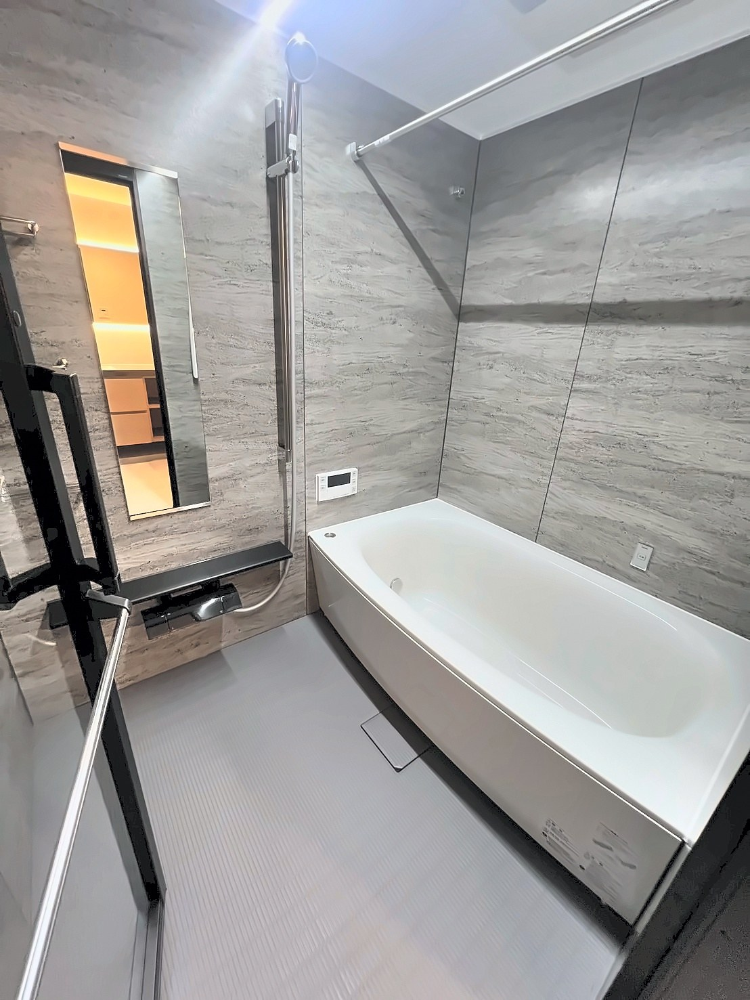

不動産の物件写真を、もっと魅力的に
暗い・傾き・色のにごり——その場で自動補正。
撮り直しのストレスなく、反響につながる部屋写真に仕上がります。


こんなお悩み、ありませんか？
スマホでの物件撮影には、どうしても“限界”があります。
窓の明るさに引っぱられて、部屋の中が暗く沈んでしまう。
壁や柱が斜めに写って、落ち着かない印象に。広角でゆがむことも。
照明の色かぶりで、壁紙が黄ばんで見え、清潔感が伝わらない。
Before / After
すべて、スマホで撮った写真をそのまま自動補正したものです。
つまみを左右に動かすと、補正前と補正後を見くらべられます。


リビング・LDK


洋室


浴室
フォトクリーニングの特長
画像生成AIは一切使わず、実際に写っているものだけを補正します。家具や広さを作り変えないので、おとり広告の心配なく不動産広告に使えます。
明るさ・傾き・色・立体感まで、まとめて自動調整。むずかしい操作はいりません。気になるところは −／＋ ボタンで微調整もできます。
特別なカメラも、HDR撮影のような専門テクニックも不要。いつものスマホで撮った1枚を、そのままアップするだけです。
使い方
登録もインストールも不要。ブラウザだけで完結します。
スマホやパソコンから、物件写真を選びます。複数枚まとめてもOK。
アップすると数秒で自動補正。必要なら傾き・あおりを微調整できます。
できあがった写真をダウンロード。連番のファイル名でまとめて保存も。
こんな方へ